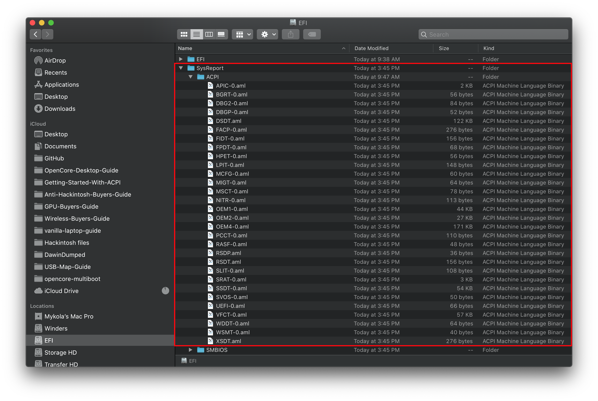

Last modified: Thu Jun 18 2020 03:15:12 GMT+0000 (Coordinated Universal Time)
Getting a copy of our DSDT
So to start, we'll need to get a copy of your DSDT from your firmware. The easiest way is grabbing the DSDT.aml SSDTTime dumped for us earlier but here are some other options:
From Windows:
- SSDTTime
- Supports both Windows and Linux for DSDT dumping
4. Dump DSDT - Automatically dump the system DSDT
-
- In command prompt run
path/to/acpidump.exe -b -n DSDT -z, this will dump your DSDT as a .dat file. Rename this to DSDT.aml
- In command prompt run
Do note that all ACPI patches from clover/OpenCore will be applied to the DSDT with the above 2 methods
From Linux:
- SSDTTime
- Supports both Windows and Linux for DSDT dumping
4. Dump DSDT - Automatically dump the system DSDT
- Do note that all ACPI patches from clover/OpenCore will be applied to the DSDT with the above method
From Clover:
For those with Clover installed previously, this is a simple way to get your ACPI tables:
- F4 in Clover Boot menu
- DSDT can be found in
EFI/CLOVER/ACPI/origin, the folder must exist before dumping
- DSDT can be found in
From OpenCore:
With OpenCore 0.5.9, we have a new quirk called SysReport which will actually dump our DSDT automatically when hitting the boot screen. The main issues are:
- You already need a bootable OpenCore USB to get this dump
- This also requires a DEBUG version of 0.5.9
For the latter, you just need to replace the following files with DEBUG version:
- EFI/BOOT/
BOOTx64.efi
- EFI/OC/Bootstrap/
Bootstrap.efi
- EFI/OC/Drivers/
OpenRuntime.efi
- EFI/OC/
OpenCore.efi
For the former, you can actually skip the ACPI section, return to the OpenCore guide(Desktop, Laptop) and finish making the USB. Once booted to the picker, you can shut off the PC and check your USB:

And voila! You have a DSDT! Now you can continue on with making SSDTs